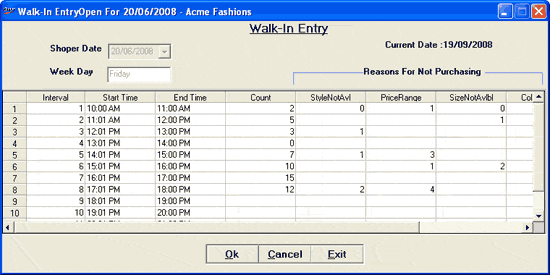

Walk-in Entry form allows you to keep track of the number of customers walking into your shop at different intervals of time. The details recorded in this form are used to generate Walk-In Conversion Reports, which can be used to analyse the sales pattern during the day/ week.
How to reach: Sales > Walk-In Entry
The Walk-In Entry form is displayed.

Shoper Date: The current Shoper date is displayed in this field.
Current Date: The current date is displayed.
Week Day: The day of the week is displayed in this field.
The Interval number with respect to each set of Start Time and End Time is displayed. The Walk-in Start Time and the Walk-in End Time specified in the system parameters are divided into equal intervals and displayed in the Walk-In grid.
Count: Enter the number of customers walked in during each interval.
Reason For Not Purchasing: There are five columns under this category. These five columns are used for recording different reasons because of which customers did not make any purchase during the mentioned time interval. These caption are as predefined in system parameters .
The five columns are:
StyleNotAvl: Enter the number of customers, who did not make purchase because the required style was not available.
PriceRange: Enter the number of customers, who did not make purchase because the price range of the selected item was not suitable for them.
SizeNotAvlbl: Enter the number of customers, who did not make purchase because the required size was not available.
ColorNotAvl: Enter the number of customers, who did not make purchase because the required colour was not available.
Others: Enter the number of customers, who did not make purchase because of any reason other than the four reasons mentioned.